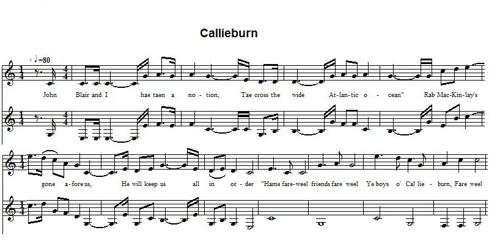

Callieburn
Les émigrants de Callieburn
author unknown

Tune - Mélodie
from the "Tobar an Dualchais" site: as sung by Alexander McMillan-McShannon in 1956
Sequenced by Christian Souchon
|
To the tune:
Related to the Jacobite song "King fareweel" . Both songs have the same chorus. Permanent link to the source for the present version: www.tobarandualchais.co.uk/fullrecord/51212/1 (sung by Alexander McMillan McShannon, 1897- 1989, in December 1956, at Campbelltown, south of Callieburn, and recorded by the folklorist and poet, Hamish Henderson (1919-2002)). To the lyrics: The lyrics have no explicit Jacobite import. Since the emigrant and his comrade have a friend in America who will help them on their arrival, it may be assumed that the song does not refer to the earliest emigration waves, but to the hardship in the 1830s and 1840s, for instance to the "hungry 40s", when the Highlands had a severe famine caused not only by the industrial revolution, but also by the "clearances", an indirect consequence of the anti-Jacobite repression and the subsequent suppression of the Clanic system. The song "(Ye Boys o') Callieburn" seems to be one of the most popular Scottish emigrant songs. The site of the School of Scottish Studies, "Tobar an Dualchais" has no less than 17 records of it, hardly different from one another in lyrics or tune. Alec McShannon learned the song from an old ploughman at Hillside, north-west of Campbeltown, when he was fifteen years old. |
A propos de la mélodie:
Elle s'apparente à celle du chant jacobite "King fareweel" dont le refrain est identique. Voici le lien vers la source de la présente version: www.tobarandualchais.co.uk/fullrecord/51212/1 (chanté par Alexander McMillan-McShannon, 1897- 1989, en décembre 1956, à Campbelltown, au sud de Callieburn, et enregistré par le folkloriste et poète, Hamish Henderson (1919-2002)). A propos des paroles: Les paroles ne comportent pas d'allusions jacobites. Du fait que l' émigrant et son camarade ont un ami en Amérique qui les aidera à leur arrivée, on peut supposer qu'on n'a pas affaire aux toutes premières vagues d'émigration, mais aux crises des années 1830 - 1840, en particulier à la "famine de 1840", dont les causes pour les Highlands tiennent non seulement à la révolution industrielle, mais aussi aux "évictions" qui furent la conséquence de la répression anti-Jacobite et de la destruction concomitante du système clanique. Le chant "(Les gars de) Callieburn" semble l'un des chants d'émigrants les plus populaires d'Ecosse. Le site de la "School of Scottish Studies", "Tobar an Dualchais", n'en propose pas moins de 17 enregistrements, assez semblables, tant par la musique que par les paroles. Alec McShannon tient sa version d'un vieux laboureur de Hillside, au nord-ouest de Campbeltown, qui la chantait quand il avait quinze ans. |

|
YE BOYS O' CALLIEBURN
1. John Blair and I hae taen a notion, Tae cross the wide Atlantic ocean. Rab McKinlay's gone afore us, He will keep us all in order. Chorus "Hame fareweel, friends fareweel And ye boys o' Callieburn, Fare ye weel" 2. We leave the land of our forefathers, Knowing not what may befall us; America, ’twas thee that wiled us, For to leave our aged parents. 3. We leave the land where we were born in Our parents say they are dishonoured; This is a song of our own composing, Comrades dear, come join the chorus. 4. Now in America we have arrived, And of our friends we are deprived; We leave them all behind us sighing, But we hope to meet in Zion. 5. Machrihanish, bright and bonnie, And down thy beach the wave is rolling; Machrihanish I adore thee, Never more shall I be o’er thee. 6. Callieburn I’ll mind thee ever, From your lands I now must sever; May thy people dwell in thee for ever, But may they gain a greater favour. |
LES GARS DE CALLIEBURN
1. John Blair et moi, nous étions mis dans la tête, De traverser le vaste Atlantique. Rab McKinlay nous a précédés, Il veillera à nous accueillir. Refrain "Adieu pays, Adieu amis Et vous, les gars de Callieburn, Adieu" 2. Nous quittons le pays de nos pères, Ignorant ce qui nous attend; Amérique, c'est toi qui nous a induits, A abandonner nos vieux parents. 3. Nous quittons le pays qui nous vit naître. Nos parents s'estiment déshonorés; Ce chant nous l'avons composé, Amis, reprenez-le en chœur. 4. Nous voici arrivés en Amérique Privés de tous nos amis; Que nous avons laissés à leurs soupirs, Mais nous nous reverrons à Sion, espérons-le! 5. Machrihanish, claire et belle, La vague se déroule sur ta grève; Machrihanish pays que j'aime, Jamais je ne t'oublierai. 6. Callieburn, toujours dans mes pensées, Je dois oublier tes prairies, tes champs; Puisse tes enfants y demeurer à jamais, Mais y avoir un destin plus clément. |